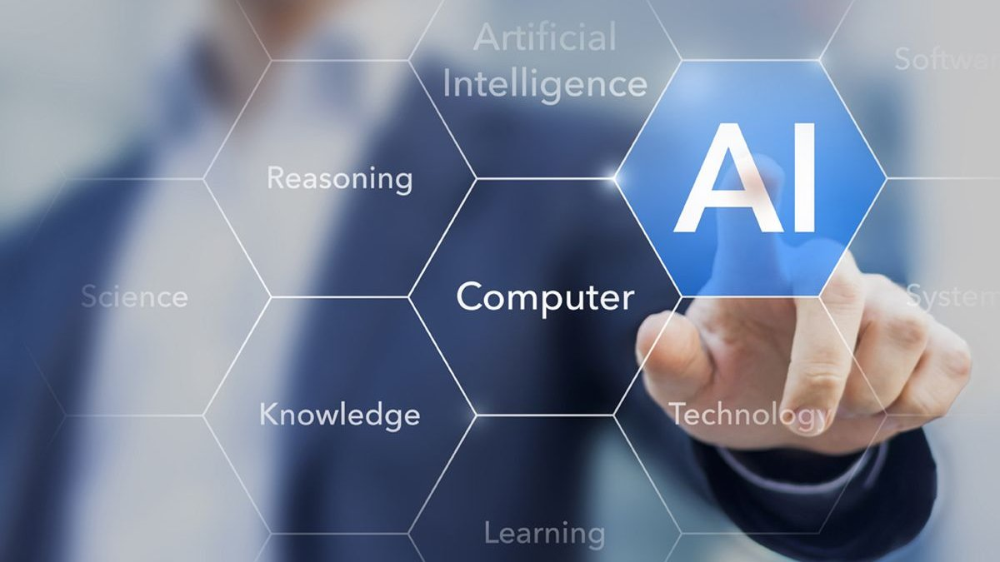

Învață Profesiile Viitorului
GRATUIT
Disponibile pentru toți doritorii
Implimenat de TIFS 
în IP LT Alexei Mateevici,s A.I.Cuza
Ce vei învață ?

Proiectarea si dezvoltarea WEB
Dezvoltarea web este un termen larg, care cuprinde orice activitate legată de dezvoltarea unui sit web pentru World Wide Web sau intranet. Aceasta poate include dezvoltarea afacerilor prin comerţ electronic (e-commerce), web design, dezvoltarea de conţinut web, programare specifică, configurarea serverelor web, etc. Dezvoltarea web include atât realizarea unor simple pagini web statice cu text, până la cele mai complexe aplicaţii Internet, afaceri electronice (ebusiness), sauservicii de reţele sociale. Pentru afacerile şi organizaţiile mai mari, echipele de dezvoltatori web pot avea sute despecialişti. Organizaţiile mai mici pot necesita chiar şi o singură persoană, permanent sau cucontract temporar, sau încă o persoană designer specializat în editare grafică şi/sau un tehnician pentru sisteme informaţionale. Dezvoltarea web poate fi un efort colaborativ între mai multe de partamente sau o activitate specifică unui singur departament specializat Paginile web au devenit parte din rutina cotidiană. Iată de ce cunoștințele în domeniu trebuie să fie asimilate chiar din școală. La curs vei studia mai aprofundat domeniul de dezvoltare a software-ului, prin analizarea nevoilor utilizatorilor și proiectarea aspectului software. Actualmente, dar și pe viitor, dezvoltatorii care pot crea site-uri de calitate, vor fi la mare căutare pe piața muncii. Vrei să afli mai multe despre lumea creatorilor web?
Poiectarea și dezvoltarea Aplicațiilor Mobile
Acest curs vă va pregăti să creaţi diferite aplicaţii pentru toate versiunile sistemelor de operare Android, inclusiv cea mai nouă versiune. Veţi fi pregătiţi să creaţi totul, de la aplicaţii simple, până la aplicaţii complexe care includ lucrul cu datele. Veți putea efectua toate acestea cu ajutorul celebrului limbaj de programare Java şi cu ajutorul mediului de dezvoltare Android Studio. Scopul este să învăţaţi conceptele avansate de programare pentru platforma Android, să vă familiarizaţi cu mediul de creare a aplicaţiilor, precum şi cu instrumentele de dezvoltare, testare şi distribuire a aplicaţiilor pe care le creaţi pentru Google Play Store şi, astfel, să obţineţi şansa ca aplicaţiile dumneavoastră să fie instalate pe milioane de dispozitive Android din toată lumea
Programarea C++
Cu C++ poți crea tot felul de lucruri uimitoare, precum jocuri video AAA, aplicații puternice pentru desktop puternice și aplicații mobile. Fiind un limbaj de programare low-level, C++ este mai greu de înțeles, dar îți oferă mai mult control asupra hardware-ului. Unii spun chiar că limbajul C++ te ajută „să fii mai aproape de metal”. De aceea este alegerea perfectă pentru dezvoltarea jocurilor video pentru console. Poți folosi C++ și în programarea sistemelor, sisteme încorporate și dezvoltare web back-end. C++ este grozav pentru crearea și optimizarea sistemelor de operare și a driverelor pentru dispozitivelor.
Design Grafic
Designul grafic este peste tot în jurul nostru, de la semnele de circulație pe lângă care treci zilnic, până la ambalajul ciocolatei pe care o savurezi cu plăcere. Acest curs te va ajuta să îți dezvolți abilitățile creative, întrucât vei crea reprezentări grafice prin folosirea tipografiei, fotografiei și ilustrației. Vei reuși astfel, să combini simboluri, imagini și text pentru a forma o reprezentare vizuală a unui mesaj, a unei idei sau istorii. La final vei putea să creezi pliante, broșuri, felicitări și multe altele. Ești curios să mergi la cursul de design grafic?

Inteligența Artificială
Republica Moldova este printre puținele țări din lume care vor oferi posibilitatea elevilor să obțină cunoștințe temeinice în domeniul Inteligenței Artificiale (AI) – știință care va avea un impact decisiv asupra speciei umane și a dezvoltării umanității. Ce este Inteligența Artificială și în ce domenii este utilizată cu succes? Inteligența Artificială (AI) este o ramură a informaticii ce produce tehnologii care emit creierul uman și comportamentele specifice oamenilor. În prezent, o mare parte din viața noastră este dominată de produsele acestei științe: asistenți personali de pe telefoanele mobile (Siri, Google), aplicații care ușurează munca șoferilor, chat bots sau chiar căutarile zilnice prin rețeaua globală.
Antreprenoriat
Antreprenoriatul este crearea sau extragerea de valoare. Antreprenoriatul este privit ca o schimbare, în general implicând riscuri dincolo de ceea ce se întâlnește în mod normal la începerea unei afaceri, care poate include alte valori decât cele pur economice. Antreprenoriatul reprezintă un proces ce constă în identificarea și urmărirea unei oportunități de afaceri, în scopul valorificării acesteia. Se referă la procesul de creare a unei noi valori (materiale sau spirituale) printr-un efort angajat, ținând cont de riscurile implicate. Cuvântul antreprenoriat este derivat din cuvântul francez „Entrepreneurs” care înseamnă „angajament”.
Video Storytelling
Cum să utilizați HTML5? Aplicațiile HTML5 pot fi pornite pentru a rula offline. HTML5 oferă funcția de stocare offline, numit un cache al cererii pentru stocarea de fișiere. Deci, dacă utilizatorul este offline, browser-ul încă mai are acces la fișierele necesare. Acesta poate fi HTML, CSS, Javascript, sau orice alte resurse necesare pentru a vizualiza pagina de web. HTML5 oferă o funcție incorporată Drag and Drop, care permite dezvoltarea de aplicații interactive. Cu Drag & Drop aveți posibilitatea să mutați orice element în locul potrivit. Geolocation API în HTML5, permite să partajați locația dvs. cu site-uri de încredere. Confidențialitatea este importantă în funcția de geolocalizare. Browserele nu au nevoie să trimită informații despre locație la site-uri Web, fără permisiunea expresă a utilizatorului.
Inteligența emoțională
Inteligența emoțională reprezintă abilitatea unui individ de a opera și a recunoaște propriile emoții, dar și ale celorlați, utilizând informațiile emoționale cu scopul de a gestiona relațiile interpersonale într-un mod empatic și eficient.[1] Cele cinci componente ale inteligenței emoționale se regăsesc în autocunoaștere, autostăpânire, motivație, empatie și stăpânirea abilităților sociale. Printre avantajele inteligenței emoționale se enumeră: îmbunătățirea relațiilor cu oamenii, comunicarea, dezvoltarea abilității de empatie, creșterea încrederii, reducerea nivelului de stres, gestionarea mai sigură a schimbării, perspectivelor de carieră.[3] S-a constatat, fără a fi demonstrat științific, că persoanele cu o inteligență emoțională (IE) ridicată au o sănătate mintală mai mare, performanță mai bună la locul de muncă și abilități de conducere. (A) Daniel Goleman a indicat că IE a reprezentat 67% din abilitățile necesare pentru performanțe ca lideri, și a contat de două ori mai mult decât cunoșțințele tehnice sau IQ-ul